콘크리트기사 (2016-05-08 기출문제)
1과목: 재료 및 배합
1. 시멘트 관련 시험에 대한 설명으로 틀린 것은?
- 시멘트의 밀도는 르샤틀리에 플라스크를 이용하여 측정한다.
- 시멘트 분말도 시험에 사용하는 마노미터액은 휘발성이므로 취급에 주의한다.
- 표준체에 의한 시멘트 분말도 시험에는 45㎛제가 사용된다.
- 시멘트 모르타르의 압축강도 및 휨강도 시험에는 40mm×40mm×160mm인 각주형 공시체가 사용된다.
(정답률: 61%)

2. 다음 중 시멘트 응결시험 방법은?
- 길모어침에 의한 방법
- 오토클레이브 방법
- 플로우(flow)시험
- 플레인 시험
(정답률: 74%)
3. 분말도(fineness)가 큰 시멘트를 사용할 경우에 대한 설명으로 틀린 것은?
- 수화가 빨리 진행된다.
- 워커블한 콘크리트가 얻어진다.
- 건조수축이 적다.
- 풍화하기 쉽다.
(정답률: 70%)
4. 콘크리트에 부순 굵은골재 또는 부순 잔골재를 사용하는 경우에 대한 설명으로 틀린 것은?
- 부순 잔골재를 사용한 콘크리트는 강모래를 사용한 콘크리트와 동일한 슬럼프를 얻기 위해서 단위수량이 약 5~10% 정도 많이 요구된다.
- 부순 굵은골재를 사용한 콘크리트 수밀성, 내구성 등을 개선시키기 위해 AE제, 감수제 등을 적당량 사용하는 것이 좋다.
- 부순 잔골재를 사용한 콘크리트의 건조수축률은 미세한 분말량이 많아질수록 증가한다.
- 부순 굵은골재를 사용한 콘크리트는 강자갈을 사용하고 동일한 물-시멘트비를 적용한 콘크리트보다 약 10%정도 강도가 감소된다.
(정답률: 65%)
5. 콘크리트 배합설계에서 시험으로부터 얻은 재령 28일 압축강도와 물-결합재비와의 관계식이
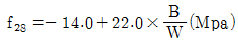
로 얻어졌다. 설계기준강도를 30 Mpa로 할 경우 적당한 물-결합재비의 값은?- 50%
- 52%
- 54%
- 56%
(정답률: 72%)
6. 설계기준 압축강도가 30MPa인 콘크리트의 배합강도를 (A)조건과 (B)조건에서 각각 구할 경우 그 값의 차이는?
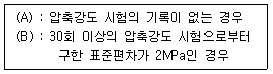
- 4.72MPa
- 5.82MPa
- 6.48MPa
- 7.26MPa
(정답률: 53%)
7. 콘크리트용 강섬유의 품질 및 품질관련 시험에 대한 설명으로 틀린 것은?
- 강섬유는 표면에 유해한 녹이 있어서 안된다.
- 강섬유는 16℃이상의 온도에서 지름 안쪽 90°(곡선반지름 3mm)방향으로 구부렸을 때, 부러지지 않아야 한다.
- 강섬유의 인장 강도 시험은 강섬유 5톤마다 10개 이상의 시료를 무작위로 추출하여 시행하여야 한다.
- 강섬유가 5톤보다 작을 경우 1톤 당 2개의 비율로 인장강도 시험을 시행하여야 한다.
(정답률: 54%)
8. 보통 콘크리트 배합설계 시 고려해야 할 사항으로 옳지 않은 것은?
- 굵은골재 최대치수가 작으면 단위수량, 단위시멘트량이 커져 비경제적이다.
- 슬럼프 값은 작업이 가능한 범위 내에서 가능한 작게 하는 것이 좋다.
- 운반시간이 길고 기온이 높은 경우는 슬럼프 저하를 고려하여 배합설계를 하는 것이 좋다.
- 단위수량을 작게 하기 위하여 잔골재율을 높이는 것이 좋다.
(정답률: 53%)
9. 조립률이 6.0인 굵은 골재 10kg과 조립률이 3.0인 잔골재 20kg을 혼합한 골재의 혼합조립률로 옳은 것은?
- 3.5
- 4.0
- 4.5
- 5.0
(정답률: 56%)
10. 아래 표는 굵은골재의 밀도 시험 결과 중의 일부이다. 이 굵은골재의 표면 건조 포화 상태의 밀도는? (단, 시험온도에서의 물의 밀도는 1g/cm3이다.)
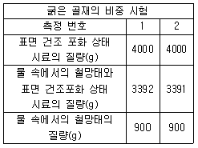
- 2.36g/cm3
- 2.61g/cm3
- 2.65g/cm3
- 2.77g/cm3
(정답률: 52%)
11. 콘크리트에 이용되는 혼화재에 대한 설명으로 틀린 것은?
- 플라이애쉬를 적절하게 사용하면 구형의 볼 베어링 효과에 의해 콘크리트의 워커빌리티를 개선한다.
- 실리카퓸을 사용한 콘크리트는 마이크로필러 효과와 포졸란 반응에 의해 재료분리가 적고 강도증가가 현저하다.
- 고로슬래그미분말은 유리질의 잠재수경성에 의해 콘크리트의 초기강도를 증가시킨다.
- 팽창재는 애트런가이트 및 수산화칼슘의 생성에 의해 콘크리트의 건조수축이나 경화수축에 기인한 균열발생을 저감시킨다.
(정답률: 75%)
12. 일반콘크리트용 잔골재로 가장 적합한 것은?
- 절대건조 밀도가 0.025g/㎣이상인 잔골재
- 조립률이 3.3~41. 범위인 잔골재
- 흡수율이 4.0% 이상인 잔골재
- 염화물(NaCl 환산량)량이 질량 백분율로 0.4% 이하인 잔골재
(정답률: 54%)
13. 콘크리트의 배합설계에서 굵은골재의 최대치수에 대한 설명으로 틀린 것은?
- 일반적인 구조물인 경우 굵은골재의 최대 치수는 20mm 또는 25mm을 표준으로 한다.
- 단면이 큰 구조물인 경우 굵은골재의 최대 치수는 40mm를 표준으로 한다.
- 무근 콘크리트 구조물인 경우 굵은 골재의 최대 치수는 50mm를 표준으로 하고, 또한 부재 최소 치수의 1/3을 초과해서는 안 된다.
- 거푸집 양 측면사이의 최소 거리의 1/5, 슬래브 두께의 1/3, 개별철근, 다발철근, 긴장재 또는 덕트 사이 최소 순간격의 3/4을 초과하지 않아야 한다.
(정답률: 64%)
14. 시멘트 모르타르의 인장강도 시험에 대한 설명으로 틀린 것은?
- 24시간 시험체는 습기함에서 꺼낸 직후, 그 외의 시험체는 저장수에서 꺼낸 직후 시험한다.
- 시험체는 클립단의 중심에 오도록 주의 깊게 넣고 하중은 계속해서 (270±10)kg/min의 속도로 부하한다.
- 평균값보다 5% 이상의 강도차가 있는 시험체는 인장강도의 계산에 넣지 않는다.
- 틀에서 빼낸 시험체가 같은 부위에서 두께와 넓이에 대한 조건이 맞지 않든가, 혹은 명백히 불완전품인 경우의 시험체는 인장강도의 계산에 넣지 않는다.
(정답률: 57%)
15. 혼화제(混和劑)에 관한 설명으로 틀린 것은?
- AE제에 의해 발생된 기포는 갇힌 공기보다 미세하며 구형이다.
- AE제의 사용량이 증가하면 공기량도 증가한다.
- 물-시멘트비가 동일한 경우 공기량이 증가하면 압축강도는 감소한다.
- AE콘크리트의 최적공기량은 5~10%이며 미세기포가 많을수록 동결융해저항성이 크며 압축강도도 크다.
(정답률: 76%)
16. 특수시멘트 중 수축보상 및 화학적 프리스트레스의 도입이 가능한 시멘트는?
- 알루미나 시멘트
- 팽창 시멘트
- 초속경 시멘트
- 콜로이드 시멘트
(정답률: 57%)
17. 콘크리트 및 모르타르 혼화재로 사용되는 고로 슬래그 미분말의 품질시험에서 활성도 지수를 측정하기 위해 적용되는 재령일이 아닌 것은?
- 재령 3일
- 재령 7일
- 재령 28일
- 재령 91일
(정답률: 70%)
18. 콘크리트 압축강도 시험에서 20개의 공시체를 측정하여 평균값이 27.0MPa, 표준편차가 2.7MPa 일 때의 변동계수는 얼마인가?
- 5%
- 7%
- 8%
- 10%
(정답률: 75%)
19. 골재 체가름 결과가 다음과 같을 때 굵은 골재의 최대치수는 얼마인가?
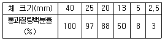
- 40mm
- 25mm
- 20mm
- 13mm
(정답률: 80%)
20. 아래의 보기와 같이 콘크리트용 유동화제를 혼합하여 사용하는 경우, 콘크리트 품질에 이상이 발생할 수 있는 경우는?
- 리그린제 – 폴리카본산제
- 나프탈렌계 – 폴리카본산계
- 멜라민계 – 리그닌계
- 리그린계 – 나프탈렌계
(정답률: 51%)
2과목: 제조, 시험 및 품질관리
21. 혼화재의 저장에 대한 설명으로 틀린 것은?
- 취급 시에 비산하지 않도록 주의한다.
- 장기간 저장한 혼화재는 사용하기 전에 시험을 실시하여 품질을 확인하여야 한다.
- 방습적인 사일로 또는 창고 등에 품종별로 구분하여 저장하고 입하된 순서대로 사용하여야 한다.
- 팽창재는 다량의 유리된 산화칼슘을 함유하고 있어 풍화에 비교적 강하므로 통풍이 잘 되는 곳에 저장한다.
(정답률: 75%)
22. 콘크리트 타설 시 침하균열 방지 조치에 대한 설명으로 틀린 것은?
- 슬래브와 보의 콘크리트가 벽 또는 기둥의 콘크리트와 연결되어 있는 경우에는 벽 또는 기둥의 콘크리트 침하가 거의 끝난 다음 슬래브, 보의 콘크리트를 타설한다.
- 콘크리트가 굳기 전에 침하균열이 발생할 경우 즉시 다짐이나 재진동을 실시한다.
- 콘크리트 타설 속도를 늦추고, 1회외 타설 높이를 작게한다.
- 단위 수량을 될 수 있는 한 크게 하여 슬럼프가 큰 콘크리트로서 시공한다.
(정답률: 70%)
23.
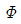
150mm×300mm인 콘크리트 표준공시체에 대하여 압축강도 시험할 때 하중 150kN이 작용할 경우 공시체 축방향의 수축량은 약 얼마인가? (단, 콘크리트의 탄성계수 E-25800MPa이다.)- 0.03mm
- 0.⑤mm
- 0.07mm
- 0.1mm
(정답률: 39%)
24. 콘크리트의 중성화에 대한 설명으로 틀린 것은?
- 수화반응에서 생성되는 수산화칼슘(pH 12~13정도)이 대기와 접촉하여 탄산칼슘으로 변화한 부분의 pH가 7~7.5 정도로 낮아지는 현상을 중성화라고 한다.
- 페놀프탈레인 1%의 에탄올 용액을 분사시키면 중성화된 부분은 변색하지 않지만 알칼리 부분은 붉은 보라색으로 변한다.
- 중성화 속도는 시간의 제곱근에 비례한다.
- 중성화를 방지하기 위해서는 양질의 골재를 사용하고 물-시멘트비를 작게 하는 것이 좋다.
(정답률: 53%)
25. 굳지 않은 콘크리트를 타설한 후, 콘크리트가 서서히 굳어져서 어느 정도의 강도를 나타내기까지는 유동성이 큰 상태에서 서서히 유동성을 잃으면서 고체상태로 변화한다. 이러한 과정을 무엇이라고 하는가?
- 응결
- 강화
- 체적변화
- 크리프
(정답률: 70%)
26. 최근 들어 자연모래의 수급이 원활하지 못하여 부순 모래(crushed sand)의 사용이 증가하고 있다. 다음 중 부순 모래에 대한 설명으로 적절하지 않은 것은?
- 암석을 파쇄기로 부수어 인공적으로 만든 모래를 부순 모래라고 하며, 부순 모래에 일정비의 자연산 모래를 혼합한 모래를 혼합모래라고 한다.
- 부순 모래를 사용하는 콘크리트는 유동성 및 단위수량에 영향을 미치므로 입형판정 실적을 시험을 실시해야 하며, 그 기준은 53%이상이어야 한다.
- 부순 모래에 포함된 미분량(0.08mm체통과량)은 단위수량을 증가시켜 동일한 유동성에서 수축량을 크게 할 수도 있으므로 시방서에서 3% 이하로 제한하고 있다.
- 부순 모래의 흡수율이 크면 기후 변화에 따라 동결융해 작용을 일으킬 수 있으므로, 그 기준을 3% 이하로 규정하고 있다.
(정답률: 39%)
27. 콘크리트의 내구성과 강도에 대한 염화물 함유량에 대한 설명으로 옳지 않은 것은?
- 콘크리트 중의 염화물 함유량은 콘크리트 중에 함유된 염소이온의 총량으로 표시한다.
- 굳지 않은 콘크리트 중의 전 염소이온량은 원칙적으로 0.3kg/m3 이하로 하여야 한다.
- 상수도 물을 혼합수로 사용할 때 여기에 함유되어 있는 염소이온량이 불분명할 경우에는 혼합수로부터 콘크리트 중에 공급되는 염소이온량을 0.03kg/m3로 가정할 수 있다.
- 콘크리트를 비비는 시점에서의 콘크리트 중의 전 염소이온량이란, 현장배합을 기준으로 계산한 경우에, 이를 각 재료로부터 콘크리트 중에 공급된다고 생각되는 염소이온량의 총합을 말한다.
(정답률: 46%)
28. 일반적으로 콘크리트의 인장강도의 범위는 압축강도의 얼마인가?
- 1/5~1/2
- 1/9~1/6
- 1/13~1/10
- 1/20~1/15
(정답률: 52%)
29. 콘크리트의 블리딩 시험방법(KS F 2414)에 대한 설명으로 틀린 것은?
- 이 방법은 굵은골재의 최대 치수가 40mm이하인 콘크리트의 블리딩 시험 방법에 대해 규정한다.
- 시험 중에는 실온 (25±2)℃ 로 한다.
- 블리딩 용기의 치수는 안지름 250mm, 안높이 285mm로 한다.
- 최초로 기록한 시각에서부터 60분 동안 10분마다 콘크리트 표면에서 스며나온 물을 빨아낸다. 그 후는 블리딩이 정지할 때까지 30분마다 물을 빨아낸다.
(정답률: 66%)
30. 현장에 타설된 콘크리트의 품질상태를 확인하기 위하여 압축강도 측정용 공시체를 제작하였다. 실제기준강도는 26MPa이며, 재령 28일 현장양생된 공시체 강도 23.5MPa, 동일조건의 시험실에서 표준 양생된 공시체 강도가 28MPa이라면 향후 품질관리를 위해서 취할 조치는?
- 현장양생공시체 강도가 설계기준강도의 85%이상이므로 별도 조치가 필요없다.
- 표준양생공시체의 강도가 설계기준강도를 상회하므로 별도 조치가 필요없다.
- 현장양생공시체 강도가 표준양생공시체 강도의 85%이하이므로 양생과 보호절차를 강구해야 한다.
- 표준양생공시체 강도가 설계기준강도 보다 3.5MPa 더 초과하므로 별도 조치할 필요없다.
(정답률: 64%)
31. 골재의 알칼리 잠재 반응 시험(모르타르 봉 방법, KS F 2546)에 대한 설명으로 틀린 것은?
- 모르타르봉 길이 변화를 측정하는 것에 의해, 골재의 알칼리 반응성을 판정하는 시험방법 이다.
- 이 시험방법은 알칼리-탄산염 반응을 검출해 내는 수단으로 적합하다.
- 시험 공시체는 시멘트 골재 배합비가 다른 2개 이상의 배치에서 각각 2개씩 최소한 4개를 만들어야 한다.
- 모르타르 배합은 질량비로서 시멘트 1, 물 0.475, 절건 상태의 잔골재 2.25로 한다.
(정답률: 41%)
32. 콘크리트의 공기량 측정 시 흡수율이 큰 골재의 경우 골재 낱알의 흡수가 시험결과에 큰 영향을 미치므로 골재의 수정계수를 측정하여야 한다. 다음 같은 1배치 배합에 대하여 압력방법(워싱턴형 공기량 측정기, KS F 2421)에 의한 수정계수를 구할 때 필요한 잔골재 및 굵은골재량을 구하면? (단, 공기량 시험기의 용적은 6ℓ로 한다.)
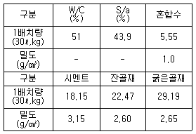
- 잔골재 – 3.5kg, 굵은골재 – 4.8kg
- 잔골재 – 4.5kg, 굵은골재 – 5.8kg
- 잔골재 – 5.5kg, 굵은골재 – 6.8kg
- 잔골재 – 6.5kg, 굵은골재 – 7.8kg
(정답률: 49%)
33. 품질관리 수법의 도구 7가지에 해당하지 않는 것은?
- 히스토그램
- 특성요인도
- 파레토도
- 회귀분석도
(정답률: 66%)
34. 콘크리트의 반죽질기 정도를 측정하는 시험방법이 아닌 것은?
- 시료의 투과시험
- 켈리볼 관입시험
- 진동대에 의한 컨시스턴시 시험
- 다짐 계수 시험
(정답률: 62%)
35. 콘크리트의 슬럼프 시험 방법에 대한 설명으로 틀린 것은?
- 슬럼프콘은 뒷면의 안지름 100mm, 밑면의 안지름이 200mm, 높이 300mm 및 두께 1.5mm 이상인 금속재로 한다.
- 슬럼프콘에 시료를 넣고 각 층을 다질 때 다짐봉의 깊이는 그 앞층에 약 50mm정도의 깊이로 들어가도록 다진다.
- 슬럼프콘에 콘크리트를 채우기 시작하고 나서 슬럼프콘의 들어 올리기를 종료할 때 까지의 시간은 3분 이내로 한다
- 슬럼프콘을 들어 올리는 시간은 높이 300mm에서 2~3초로 한다.
(정답률: 65%)
36. 하중을 원주형공시체(지름 100mm, 높이 200mm)가 파괴될 때까지 가압하고, 시험 중에 공시체가 반은 최대 하중이 200kN이었다면 콘크리트의 압축강도는 얼마인가?
- 25.5MPa
- 26.5MPa
- 30.1MPa
- 34.5MPa
(정답률: 52%)
37. 어느 레미콘 공장의 콘크리트 압축강도 시험결과 표준편차가 1.5MPa 이었고, 압축강도의 평균값이 39.6MPa 이었다면 이 콘크리트의 변동계수는?
- 2.8%
- 3.8%
- 4.5%
- 5.5%
(정답률: 52%)
38. 콘크리트 비비기에 대한 설명으로 틀린 것은?
- 비비기 시간에 대한 시험을 실시하지 않은 경우 그 최소 시간은 가경식 믹서일 때에는 1분 30초 이상을 표준으로 한다.
- 비비기 시간에 대한 시험을 실시하지 않은 경우 그 최소 시간은 강제식 믹서일 때에는 1분 이상을 표준으로 한다.
- 비비기는 미리 정해둔 비비기 시간 이상 계속하지 않아야 한다.
- 연속믹서를 사용할 경우, 비기기 시작 후 최초에 배출되는 콘크리트는 사용하지 않아야 한다.
(정답률: 56%)
39. 일반 콘크리트에 사용되는 재료의 계량에 대한 설명으로 틀린 것은?
- 사용재료는 시방배합에 의해 실시하는 것으로 한다.
- 골재가 건조되어 있을 때의 유효 흡수율 값은 골재를 적절한 시간 동안 흡수시켜서 구하여야 한다.
- 혼화제를 녹이는 데 사용하는 물이나 혼화제를 묽게 하는 데 사용하는 물은 단위수량의 일부로 보아야 한다.
- 각 재료는 1배치씩 질량으로 계량하여야 한다. 다만, 물과 혼화제 용액은 용적으로 계량해도 좋다.
(정답률: 63%)
40. 다음 중 계량값 관리도에 포함되지 않는 것은?
 관리도
관리도 관리도
관리도- x관리도
- p관리도
(정답률: 69%)
3과목: 콘크리트의 시공
41. 매스 콘크리트에 대한 아래 표의 설명에서 ( )에 들어갈 알맞은 수치는?
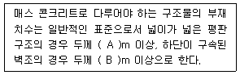
- A : 0.5, B: 0.8
- A : 0.5, B: 1.0
- A : 0.8, B: 0.5
- A : 1.0, B: 0.8
(정답률: 68%)
42. 유동화 콘크리트의 배합에 대한 일반적인 설명으로 틀린 것은?
- 잔골재율 결정시 베이스 콘크리트의 슬럼프에 적합한 잔골재율로 결정해야 유동화 후 콘크리트의 품질이 좋다.
- 유동화 콘크리트의 슬럼프 증가량은 100mm 이하를 원칙으로 하며, 50~80mm를 표준으로 한다.
- 공기연행재의 사용량은 유동화 후 목표 공기량이 얻어질 수 있도록 베이스 콘크리트 상태에서 약간 많은 공기량의 확보가 필요하다.
- 베이스 콘크리트의 슬럼프는 콘크리트의 유동화에 지장이 없는 범위의 것이어야 한다.
(정답률: 30%)
43. 숏크리트의 뿜어붙이기 성능평가항목으로서 적당하지 않은 것은?
- 반발률
- 분진농도
- 숏크리트의 초기강도
- 숏크리트의 인장강도
(정답률: 59%)
44. 서중콘크리트에 관한 다음의 설명 중 틀린 것은?
- 감수제, AE감수제 및 유동화제는 지연형을 사용하는 것이 바람직하다.
- 콘크리트의 비빔온도가 높을수록 장기재령에 있어서의 강도증진은 작다.
- 시공불량에 의해 이어치기면 이외의 장소에도 불연속면이 발생하기 쉽다.
- 동일의 슬럼프를 얻기 위한 단위수량이 적어진다.
(정답률: 50%)
45. 바닥틀의 시공이음에 대한 설명으로 옳은 것은?
- 슬래브 또는 보의 지점 부근에 두어야 한다.
- 보가 그 경간 중에서 작은 보와 교차할 경우에는 교차지점에 보의 시공이음을 설치하여야 한다.
- 슬래브 또는 보의 경간 중앙부 부근에 두어야 한다.
- 보가 그 경간 중에서 작은 보와 교차할 경우에는 작은 보의 폭의 약 5배 거리만큼 떨어진 곳에 보의 시공이음을 설치하여야 한다.
(정답률: 50%)
46. 방사선 차폐용 콘크리트에 대한 설명으로 틀린 것은?
- 주로 생물체의 방호를 위하여 X선, γ선 및 중성자선을 차폐할 목적으로 사용되는 콘크리트를 방사선 차폐용 콘크리트라 한다.
- 콘크리트의 슬럼프는 작업에 알맞은 범위 내에서 가능한 한 적은 값이어야 하며, 일반적인 경우 150mm 이하로 하여야 한다.
- 물-결합재비는 50%이하를 원칙으로 한다.
- 화학혼화제는 사용하지 않는 것을 원칙으로 한다.
(정답률: 55%)
47. 유동화 콘크리트에서 유동화 시키는 방법이 아닌 것은?
- 공장첨가 공장유동화 방식
- 공장첨가 현장유동화 방식
- 현장첨가 공장유동화 방식
- 현장첨가 현장유동화 방식
(정답률: 62%)
48. 포장용 콘크리트의 배합기준에 대한 설명으로 틀린 것은?
- 설계기준 휨강도(f25)는 4.5MPa 이상이어야 한다.
- 단위 수량은 150kg/m3이하이어야 한다.
- 공기 연행콘크리트의 공기량 범위는 2~3%이여야 한다.
- 굵은골재의 최대 치수는 40mm 이하이어야 한다.
(정답률: 45%)
49. 고강도 콘크리트에 대한 일반적인 설명으로 틀린 것은?
- 고성능 감수제(고유동화제)의 개발로 인해 고강도 콘크리트의 제조가 가능해졌다.
- 고강도 콘크리트는 사용되는 굵은골재의 최대 치수가 클수록 강도면에서 유리하다.
- 고강도 콘크리트는 응집력이 강한 부배합 콘크리트 이므로 제료들을 잘 섞을 수 있는 믹서사용이 효과적이며, 일반적으로 가경식 믹서 보다는 강제식 믹서가 더 좋다
- 고강도 콘크리트는 믹서에 재료를 투입하는 순서에 따라서 강도 발현 이 달라진다.
(정답률: 59%)
50. 콘크리트 공장제품의 장점에 해당되지 않는 것은?
- 조립구조에 주로 사용되므로 공사기간이 단축된다.
- 현장에서 거푸집이나 동바리 등의 준비가 필요 없다.
- 규격품을 제조하므로 숙련공을 필요로 하지 않는다.
- 기후상황에 좌우되지 않고 시공을 할 수 있다.
(정답률: 73%)
51. 하절기 콘크리트의 문재점을 보완하는 내용과 관계가 먼 것은?
- 하절기 콘크리트를 배합할 때 저온의 혼합수 사용
- 하절기 콘크리트 배합과정에서 골재냉각 사용
- 하절기 콘크리트를 타설할 때 응결촉진제 사용
- 하절기 콘크리트를 배합할 때 수화발열량이 적은 시멘트 사용
(정답률: 71%)
52. 프리플래이스트 콘크리트의 일반사항에 대한 설명으로 틀린 것은?
- 미리 거푸집 속에 특정한 입도를 가지는 굵은 골재를 채워놓고 그 간극에 모르타르를 주입하여 재조한 콘크리트를 프리플레이스트 콘크리트라 한다.
- 팽창률의 설정값은 시험 시작 후 1시간에서의 값이 3~6%인 것을 표준으로 한다.
- 주입모르타르의 유동성은 유하시간에 의해 설정하며, 유하시간의 설정값은 16~20초를 표준으로 한다.
- 블리딩률의 설정값은 시험 시작 후 3시간에서의 값이 3% 이하가 되는 것으로 한다.
(정답률: 32%)
53. 콘크리트 다지기에 대한 설명으로 틀린 것은?
- 재진동을 할 경우에는 재진동의 효과를 극대화 하기 위하여 초결이 일어난 이후에 실시하여야 한다.
- 콘크리트 다지기에는 내부진동기의 사용을 원칙으로 한다.
- 내부진동기의 삽입간격은 일반적으로 0.5m이하로 하는 것이 좋다.
- 거푸집관에 접하는 콘크리트는 되도록 평탄한 표면이 얻어지도록 타설하고 다져야 한다.
(정답률: 70%)
54. 수밀콘크리트의 배합에 대한 설명으로 틀린 것은?
- 물-결합제비는 60% 이하를 표준으로 한다.
- 배합은 소요의 품질이 얻어지는 범위 내에서 단위수량 및 물-결합제비는 되도록 적게 한다.
- 콘크리트의 워커빌리티를 개선시키기 위해 AE제 등을 사용하는 경우라도 공기량은 4% 이하가 되게 한다.
- 콘크리트의 소요 슬럼프는 되도록 적게 하여 180mm를 넘지 않도록 한다.
(정답률: 66%)
55. 해양 콘크리트에 대한 설명으로 틀린 것은?
- 해양 콘크리트 배합 시 고로시멘트, 플라이애쉬시멘트 또는 중용열포틀랜드시멘트를 사용하는 것이 좋다.
- 해양 구조물은 만조위로부터 위로 0.6m, 간조위로부터 아래로 0.6m 사이의 감조부분에 시공이음이 생기지 않도록 하여야한다.
- 물보라 지역 및 해상 대기중에서는 굵은골재가 25mm인 경우 단위 결합재량은 330kg/m3이상 사용하는 것이 좋다.
- 동결융해작용을 받을 염려가 있는 해양콘크리트의 공기량은 굵은골재 최대 치수가 25mm인 경우 3%로 한다.
(정답률: 44%)
56. 외기 온도 25℃ 이하일 때의 일반 콘크리트 허용 이어치기 시간 간격의 한도는?
- 60분
- 90분
- 120분
- 150분
(정답률: 48%)
57. 콘크리트의 시공이음에 대한 설명으로 옳지 않은 것은?
- 콘크리트를 이어칠 경우에는 구 콘크리트의 표면의 레이틴스를 제거해야 한다.
- 시공이음은 부재의 압축력이 작용하는 방향과 수평이 되도록 설치하는 것이 원칙이다.
- 부득이 전단력이 큰 위치에 시공이음을 설치할 경우에는 시공이음에 장부 또는 홈을 두거나 적절한 강재를 배치하여 보강하여야 한다.
- 시공이음은 될 수 있는 대로 전단력이 작은 위치에 설치한다.
(정답률: 59%)
58. 숏크리트에서 섬유뭉침(fiber-ball)현상을 설명한 것으로 옳은 것은?
- 굵은 골재의 최대치수가 커질수록 섬유뭉침현상이 증가한다.
- 굵은골재의 최대치수가 커질수록 섬유뭉침현상이 감소한다.
- 잔골재량이 증가할수록 섬유뭉침현상이 증가한다.
- 잔골재량이 증가할수록 섬유뭉침현상이 감소한다.
(정답률: 50%)
59. 벽 또는 기둥과 같이 높이가 높은 콘크리트를 연속해서 타설하는 경우 쳐올라가는 속도는 단면의 크기, 콘크리트 배합, 다지기 방법에 따라 다르므로 현장여건에 맞게 적절히 조절해야 한다. 다음 중 일반적인 경우 벽 또는 기둥의 콘크리트 타설속도로 가장 적당한 것은?
- 30분에 0.5 ~ 1.0m
- 30분에 1.0 ~ 1.5m
- 30분에 1.5 ~ 2.0m
- 30분에 2.0 ~ 2.5m
(정답률: 52%)
60. 숏크리트용 재료에 대한 설명으로 잘못된 것은?
- 시멘트는 KS L 5201에 적합한 보통포틀랜드시멘트를 사용하는 것을 표준으로 한다.
- 보강철망을 사용할 경우에는 원칙적으로 용접이 되지 않은 철망을 사용하여야 한다.
- 배합수는 상수도수를 사용하면 무방하다.
- 골재는 알칼리골재반응에 대해 무해한 것을 사용해야 한다.
(정답률: 62%)
4과목: 구조 및 유지관리
61. 건조 상태의 철근 콘크리트 구조에서 철근 부식 방지를 위한 콘크리트 내 수용성 염소 이온의 시멘트 질량에 대한 최대 허용비율은 얼마인가?
- 0.15%
- 0.30%
- 0.50%
- 1.0%
(정답률: 24%)
62. 철근콘크리트의 열화요인은 크게 물리적 요인과 화학적 요인으로 나눌 수 있다. 이중 화학적 요인에 속하지 않는 것은?
- 동해
- 알칼리골재반응
- 중성화
- 염해
(정답률: 82%)
63. 아래의 표에서 설명하는 현상은?
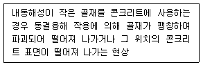
- 응식
- 침식
- 팝아웃
- 화학적 침식
(정답률: 69%)
64. 사용하중하에서 콘크리트에 휨인장응력의 작용을 허용하는 프리스트레싱 방법은?
- 외적 프리스트레싱
- 파셜 프리스트레싱
- 내적 프리스트레싱
- 풀 프리스트레싱
(정답률: 63%)
65. 아래 그림과 같은 직사각형에 철근콘크리트 보의 강도감소계수는
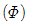
얼마인가? (단, fck=35MPa, fy=300MPa, As=6500mm2)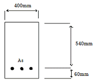
- 0.815
- 0.825
- 0.835
- 0.845
(정답률: 34%)
66. 프리스트레스트 콘크리트에서 프리스트레스 도입 후 시간의 경과에 따라 일어나는 손실의 원인이 아닌 것은?
- 콘크리트의 크리프
- 콘크리트의 탄성변형
- 콘크리트의 건조수축
- PS강제의 릴렉케이션
(정답률: 32%)
67. 콘크리트 구조물에서 코어채취에 의한 시험으로 알 수 없는 것은?
- 중성화 깊이
- 인장강도
- 고음진동수
- 염화물이온함유량
(정답률: 57%)
68. 구조물의 보강공법 중 강판보강공법의 특징에 대한 설명으로 틀린 것은?
- 강판을 사용하므로 모든 방향의 인장력에 대응할 수 있다.
- 시공이 간단하고, 강판의 제작, 조립도 쉬워서 현장작업에는 복잡하지 않다.
- 현장타설 콘크리트, 프리캐스트 부재 모두에 적용할 수 있으므로 응용범위가 넓다.
- 접착제의 내구성, 내피로성의 확인이 쉬우며, 기존에 타설된 콘크리트의 열화가 진행 중인 상황에도 보수 없이 시공할 수 있다.
(정답률: 57%)
69. 콘크리트 구조물의 수명에 관한 설명으로 옳지 않은 것은?
- 반복하중은 구조물의 수명과 무관하다.
- 구조물을 보수하면 수명의 연장이 가능하다.
- 피로현상과 열화현상은 구조물의 수명에 영향을 미친다.
- 기본 내구수명에 도달하면 구조물의 보수∙보강이 필요하다.
(정답률: 64%)
70. 다음 그림과 같은 단철근 직사각형 단면에서 인장철근은 2개의 철근 D22가 윗부분에, 2개의 철근 D29가 아랫부분에 두 줄로 배치되었다. 이때 보의 공칭휨강도 Mn을 계산하면? (단, 철근 D22 2본의 단면적은 774mm2, 철근 D29 2본의 단면적은 1285mm2, fck=24MPa, fy=24MPa=350MPa이다.)
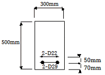
- 234kN∙m
- 244kN∙m
- 254kN∙m
- 264kN∙m
(정답률: 40%)
71. 콘크리트가 외부로부터의 화학작용을 받아 시멘트 경화제를 구성하는 수화생성물이 면질 또는 분해하여 결합 능력을 잃는 열화현상을 총칭하여 화학적 부식이라고 한다. 다음 화학물질 중 침식 정도가 극히 심한 침식을 일으키는 것은?
- 과망간산칼륨
- 질산암모늄
- 파라핀
- 몰타르
(정답률: 65%)
72. 단부에 표준갈고리가 있는 인장철근 D25(공칭지름 25.4mm)를 정착시키는 데 필요한 기본 정착길이(lhb)는? (단, fck=24MPa, fy=400MPa, 도막되지 않은 철근이며, 보통 중량 콘크리트의 경우이다.)
- 498mm
- 519mm
- 584mm
- 647mm
(정답률: 30%)
73. 내하력에 관해 의문시되는 기존구조물의 강도평가 내용 중 틀린 것은?
- 구조물이나 부재의 안전도에 대한 우려가 있으면, 재하시험에 의해 모든 응답이 허용규정을 만족해도 구조물을 사용해서는 안된다.
- 구조물 또는 부재의 안전이 의문시 되는 경우, 해당 구조물의 안전도 및 내하력의 조사를 실시하여야 한다.
- 강도 부족에 대한 요인을 잘 알 수 있거나 해석에서 요구되는 부재 크기 및 단면의 특성을 측정할 수 있다면 해석적 평가가 가능하다.
- 강도부족에 대한 원인을 알 수 없거나 해석적 평가가 불가능 할 경우, 재하시험을 실시하여야 한다.
(정답률: 60%)
74. b=500㎜, d=800㎜, As=4⑤3.6mm2인 단 철근 직사각형보의 등가직사각형 응력블록의 길이(a)는? (단, fck=21MPa, fy=300MPa)
- 86mm
- 96mm
- 116mm
- 136mm
(정답률: 39%)
75. 설계기준항복강도가 400MPa인 D19 이형철근을 배근한 벽체에서 수평으로 배치되는 최소 수평철근비는? (단, 벽체의 전체 단면적에 대한 최소 수평철근비)
- 0.0012
- 0.0015
- 0.0020
- 0.0025
(정답률: 39%)
76. 다음 중 콘크리트 구조물의 보강공법으로 보기 어려운 것은?
- 두께 증설공법
- 균열주입공법
- FRP 접착공법
- 프리스트레스 도입공법
(정답률: 50%)
77. 그림과 같이 D25 철근이 축방향으로 배근된 나선철근 기둥(단주)의 설계 축하중 강도(
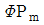
)는? (단, fck=30MPa, fy=400MPa, I-D25-506.7mm2 압축지배단면이다.)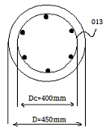
- 1256kN
- 2584kN
- 3091kN
- 4313kN
(정답률: 48%)
78. D13철근을 U형 수직 스터럽으로 배치한 직사각형 단철근보에서 공칭 전단강도(Vn)는 얼마인가? (단, D13철근 1본의 단면적=126.7mm2, 스터럽 간격=120mm, 단면폭=300mm, 유효깊이=500mm, fck=30MPa, fy=400MPa)
- 359kN
- 478kN
- 559kN
- 647kN
(정답률: 41%)
79. b=500㎜, d=600㎜, fck=35MPa, fy=400MPa인 단철근 직사각형보의 균형철근비는?
- 0.0317
- 0.0324
- 0.0357
- 0.0379
(정답률: 50%)
80. 철근의 부식상태 조사방법 중 자연전위법에 대한 설명으로 틀린 것은?
- 자연전위(E)가 – 350mV 이하이면 90% 이상의 확률로 부식이 있다.
- 콘크리트 표면이 건조한 경우에는 물을 뿌려 표면을 습윤상태로 만든 후 전위측정을 한다.
- 염화물의 침투와 중성화로 철근이 활성태로 되어 부식이 진행하면 그 전위는 마이너스(-)방향으로 변화된다.
- 피복콘크리트의 전기저항을 측정함으로써 그 부식성 및 철근의 부식속도에 관계하는 정보를 얻을 수 있으며, 일반적으로 4점 전극법을 사용한다.
(정답률: 51%)